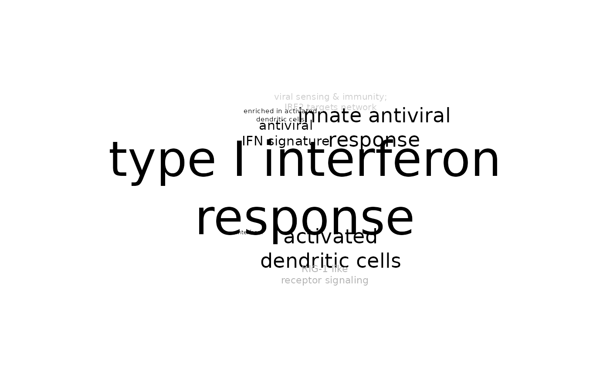

tmodTagcloud.RdPlot a tag (word) cloud based on results from tmod enrichment.
tmodTagcloud( results, filter = TRUE, simplify = TRUE, tag.col = "Title", min.auc = 0.5, max.qval = 0.05, plot = TRUE, weights.col = "auto", pval.col = "P.Value", maxn = NULL, ... )
| results | data frame produced by one of the tmod enrichment tests |
|---|---|
| filter | Whether redundant and not annotated modules should be removed |
| simplify | Whether module names should be simplified |
| tag.col | Which column from results should be used as tags on the plot |
| min.auc | Minimal AUC to show (default: 0.5) |
| max.qval | Maximal adjusted p value to show (default: 0.05) |
| plot | Should the tag cloud be plotted or only returned |
| weights.col | Which column from results should be used as weights for the tag cloud |
| pval.col | Which column contains the P values which will be used to shade the tags |
| maxn | Maximum number of gene set enrichment terms shown on the plot (if NULL – default – all terms will be shown) |
| ... | Any further parameters are passed to the tagcloud function |
Either NULL or whatever tagcloud returns
The tags will be generated based on results from tmod or any other suitable data frame. The data frame must contain two numeric columns, specified with "weights.col" and "pval.col", which will be used to calculate the size and shade of the tags, respectively. Furthermore, it has to contain a column with tags (parameter "tag.col", by default "Title").
Any data frame can be used as long as it contains the specified columns.
data(tmod) fg <- tmod$MODULES2GENES[["LI.M127"]] bg <- tmod$GENES$ID result <- tmodHGtest( fg, bg ) tmodTagcloud(result)#> Warning: Less than 2 results found, not generating plot